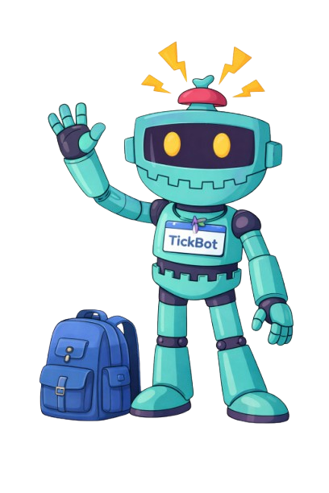

Find answers fast
Use the Knowledge Base for quick fixes before you even make a ticket.
Welcome to Academtick
Academtick is a friendly K–12 ticketing system that helps students and staff report problems, track updates, and find quick fixes — without the stress.
Description: A friendly, smart guide who helps users find the right path without the stress. Clear, supportive, and always pointing you forward.
“You’ve got this—let’s take the next step."

Use the Knowledge Base for quick fixes before you even make a ticket.
See updates, status changes, and who’s working on your request.
Big buttons, simple language, and a layout that works for K–12.